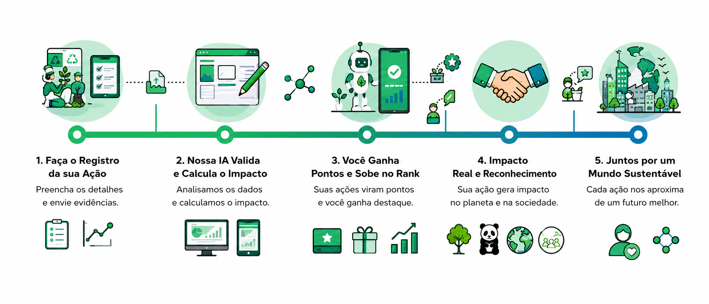

O problema: Os usuários passam horas por dia em redes sociais como TikTok e Instagram, mas 100% do valor que eles geram fica com as plataformas. Além disso, mesmo com interesse em sustentabilidade, falta um incentivo concreto pra adotar ações do dia a dia.
Nossa solução: O RankUp+ é uma rede social gamificada que recompensa ações sustentáveis verificadas com pontos. O usuário grava um vídeo da ação (plantar uma árvore, reciclar, usar transporte público), nossa IA valida o impacto em CO₂, e os pontos viram cupons em parceiros ESG, doações a ONGs (SOS Mata Atlântica, WWF, Instituto Akatu) ou benefícios financeiros.
Público-alvo: Jovens adultos entre 18 e 34 anos, residentes em São Paulo, que já usam redes sociais e têm interesse em sustentabilidade, mas buscam também retorno financeiro e privacidade.
Tecnologias usadas neste site: HTML5, CSS3 e JavaScript puro. Ícones do Font Awesome via CDN.
